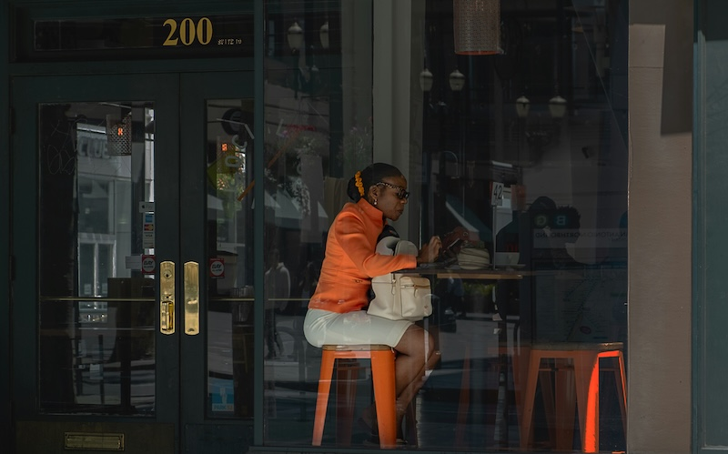

Helping you bloom, one week at a time.
The Weekly page breaks down self-care routines one can practice every week into three essential categories, that is, body, mind, and environment. Simple physical self-care: like setting a hydration goal, trying a new 20-minute workout, cooking one healthy meal from scratch, or practicing a stretching routine before bed. These tasks focus on physical wellness but don't leave one feeling very overwhelmed. Mental self-care includes journaling to reflect one's emotions, making a gratitude list, a very little focused intention for the week, or time unplugged from social media. Perhaps even personal check-ins; brief mindful moments keeping one conscious of how they're feeling and of what they need. Again, self-care for environments will encourage one to tidy one room or even just one section of it, to take something reusable rather than single-use once, to make little changes that lessen waste, or preferably just go outside and experience. Such small practices piled up in a week will be quite powerful in improving one's life and surrounding bit by bit without those huge life changes.
Self Care: Mind
🕯️ Journal your thoughts, feelings, or daily reflections
🕯️ Practice gratitude by writing down 3 things you're thankful for each day
🕯️ Meditate, even if it's just for 5 minutes
🕯️ Limit screen time, especially on social media
🕯️ Read a book for pleasure or personal growth
🕯️ Set boundaries with people or activities that drain you
🕯️ Talk to a therapist, counselor, or trusted friend
🕯️ Talk to a therapist, counselor, or trusted friend
🕯️ Talk to a therapist, counselor, or trusted friend
🕯️ Talk to a therapist, counselor, or trusted friend
🕯️ Give yourself permission to rest without guilt
Self Care: Body
🌸 Eat regular, balanced meals (include but not limited to, protein, veggies, whole grains).
🌸 Try a fun fitness class (dance, yoga, spin, boxing, etc.)
🌸 Develop a simple skincare routine (cleanse, moisturize, sunscreen).
🌸 Prepare meals at home to control ingredients.
🌸 Try mindful eating—slow down, chew thoroughly, notice how food makes you feel.
🌸 Take vitamins or supplements if needed (consult a doctor).
Self Care: Environment
🌿Spend time outside picking up litter or caring for a shared space.
🌿Volunteer at a local shelter, soup kitchen, or clean-up group.
🌿Refresh your digital space—organize files, delete old screenshots.
🌿Make your bed and open a window to let fresh air in at least once a week.
🌿Play calm music to create a vibe.
🌿Buy a plant and take care of it. Water it a few times a week depending on the species.
🌿Invite friends and family to your space for a get together.
🌿Disinfect high touch areas such as door knobs and handles.